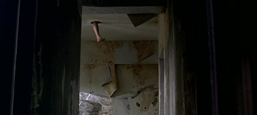

Drive

you remember the way, right?
whenever you drive i spend the entire time staring out the window so i've gotten it all down.
is there much to stare at, even?
i could look at you instead. but i know what you look like.
it is a strange feeling to be in the passenger's seat. like eating with a plate instead of a bowl, wearing a shirt without any sleeves. he, like everyone who's driving for the first time in his life, goes about it nervously, carefully, so careful it's to the point of sloppiness, hands being forced to move in ways they never have. i see his feet feel around for the pedals - the feet were the hardest part for me. i picked it up quick regardless, he has a few more problems easing into it. but coordinating your feet alongside your hands is a difficult ordeal. i see cords of muscle running along his arm rhythmically tensing, untensing, see his eyes so steely focused like he could pinpoint individual atoms in the asphalt, what for? all this effort? it's a straight road.
you don't have to focus so hard, you know. you can take it a little easy. you seem like you're about to pop.
i just gotta, man. i just gotta.
the window is fixed, finally. who ever knows where he got the replacement pane. some tucked-away deals-in-handshakes market only him and two other people in the entire city know of, the same place he gets all the gas, sandbags, black powders of all sorts, the same place he disappears to before i wake up in the mornings and see the empty depression his body's left in the mattress. i watched him take apart the door two days ago, slide the new piece in. just stood there holding the light.
he has a white plastic tray to hold the screws, he'd set it on the floor that day. he would take the screwdriver, move his hand along the surface of the door feeling for a little divot, scanning - there's one. take the screwdriver, twist the screw out. feel again, there's two - go again. he does this a few more times, then lifts the entire panel off the side and sets it off the ground.
do you still need the light?
not for a while, no.
hmm. i wanna make myself useful somehow.
useful? i got an idea maybe. i've always thought it would be nice to decorate the car a little.
decorate the car? you mean like, decals? stickers?
i mean the inside, put some stuff around, see if we can fit a poster somewhere, hang cute little air fresheners from the roof. make it more lived in.
oh, interesting. sure. why not?
i leave him by the car and head back up 40 floors into my, our, apartment, pick up some old photos and pictures and posters, tape, superglue, spare stuffed animals, head back down. i put a bear in the backseat. stick some polaroid pictures to the interior as he slots the new window in and puts the screws back into the panel. he takes a picture, cuts a circular hole through the top to loop some string around, and hangs it from the ceiling. it falls limp in the stale carpark air.
what are we going for here actually? you want it to be all cutesy?
doesn't have to be cute. we can make it a little edgier maybe.
you wanna spray paint one of the doors?
yeah.. yeah. shit. yeah. we gotta do that.
do you wanna get some?
he does. i pass him a twenty and watch him vanish down the stairs, and i head back up with a cardboard box sifting through all the knickknacks in dusty unopened drawers, scissors, i pick up a coke from the fridge because i figure we'll be down there a while working on this and he'll want one. i carry the box down the elevator, walk back into the carpark, set the box down. he'll be back in ten minutes or so. i feel alone in here. the carpark's seven storeys tall and could fit maybe two hundred cars per storey, chipped white lines on chipped white lines, square cutouts of concrete through which you can look at more concrete. in the distance i hear the sound of a car door shutting, driving off downwards. there is this constant background hum, this radiation sticking through the air and making it heavy, like a dull tinnitic ringing. it comes from the earth, from the walls, from the ceilings. it makes me feel small. i sit crosslegged and alone. minutes pass and i hear him again.
right. so i got black and red. and lime too obviously. i got a few air fresheners and i got paint for the inside. paper too i'm thinking i stick some shit to the back of the seats, you know.
for the stuffed animals to look at?
for exactly that, yes.
slung from his arms are two big bags of stuff, plastic threatening to rip.
you got all of that for a twenty?
i have my ways.
christ. you gotta stop just doing that for like, miscellaneous objects we can definitely afford.
what's the harm?
i dunno, you could get caught, and then they'd put you in the back room and call your mom or something,
they only do that if you're seven or eight.
if you tried your hardest you could pass as seven or eight.
no i could not.
i could pretend to be your dad. give you a stern talking to. say i am very disappointed in you son. i raised you to be better.
hmm. don't say that.
this is not how we go about things son. this behaviour is unacceptable.
i'm gonna start.
i could like, get those insoles that make you taller. mascara a beard on.
it doesn't look like he appreciates the joke. he reaches into those big bags of stuff and pulls out a hefty cylinder of spraypaint, rattles it just for the sound, walks to the doors on the opposite side and starts. he bought some watercolors and a stack of cardstock, i take that out of the bag, sit down on the carpark floor and make myself busy. i was never good at this, but i'm good enough at it to get by. there's that phwish of spray paint fizzing from the back, hissing like a snake.
what are you gonna make back there?
hmm. i dunno. a mountain. maybe.
have you done this before?
look at me and ask me again if i've done this before.
that is fair.